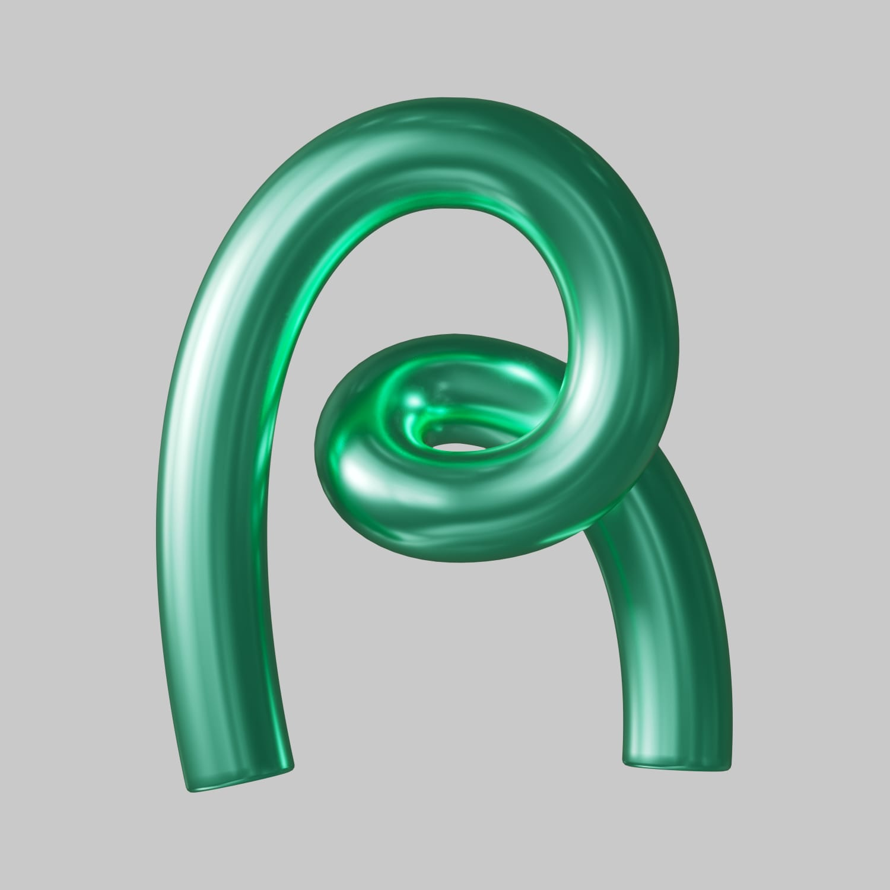
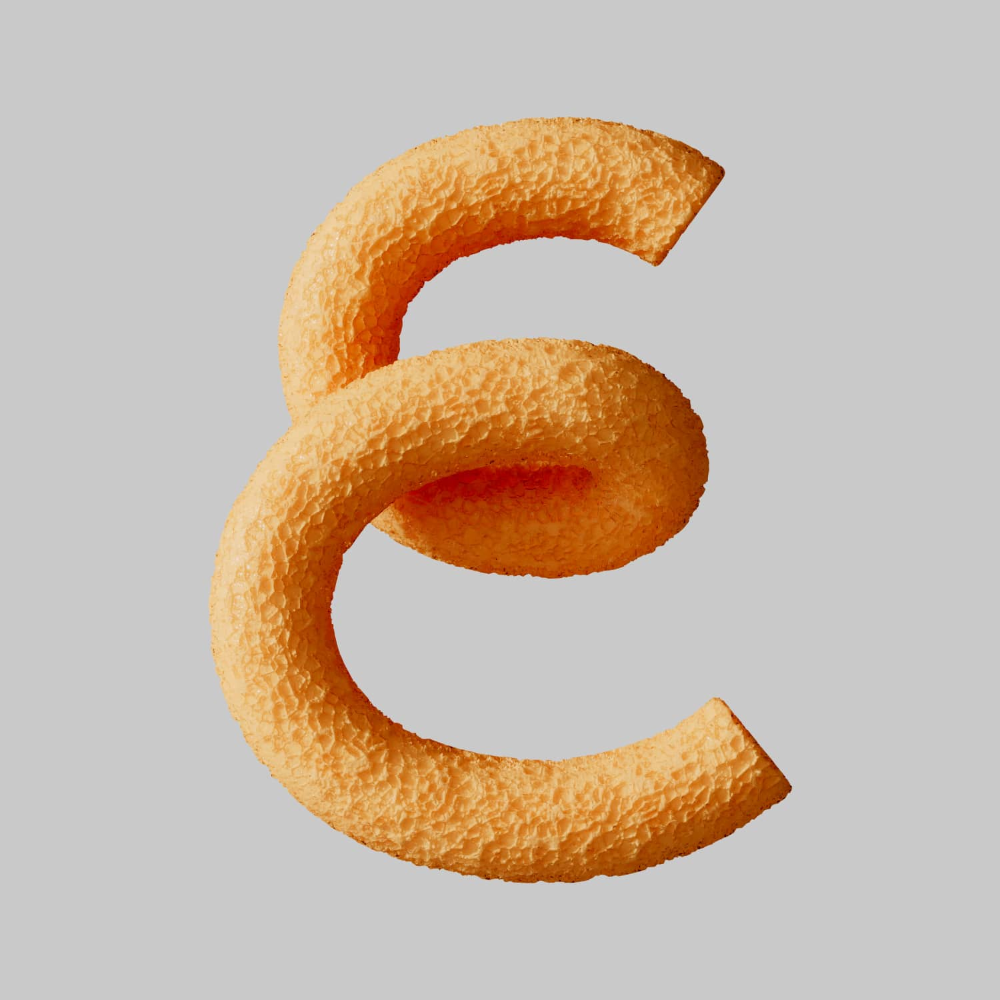
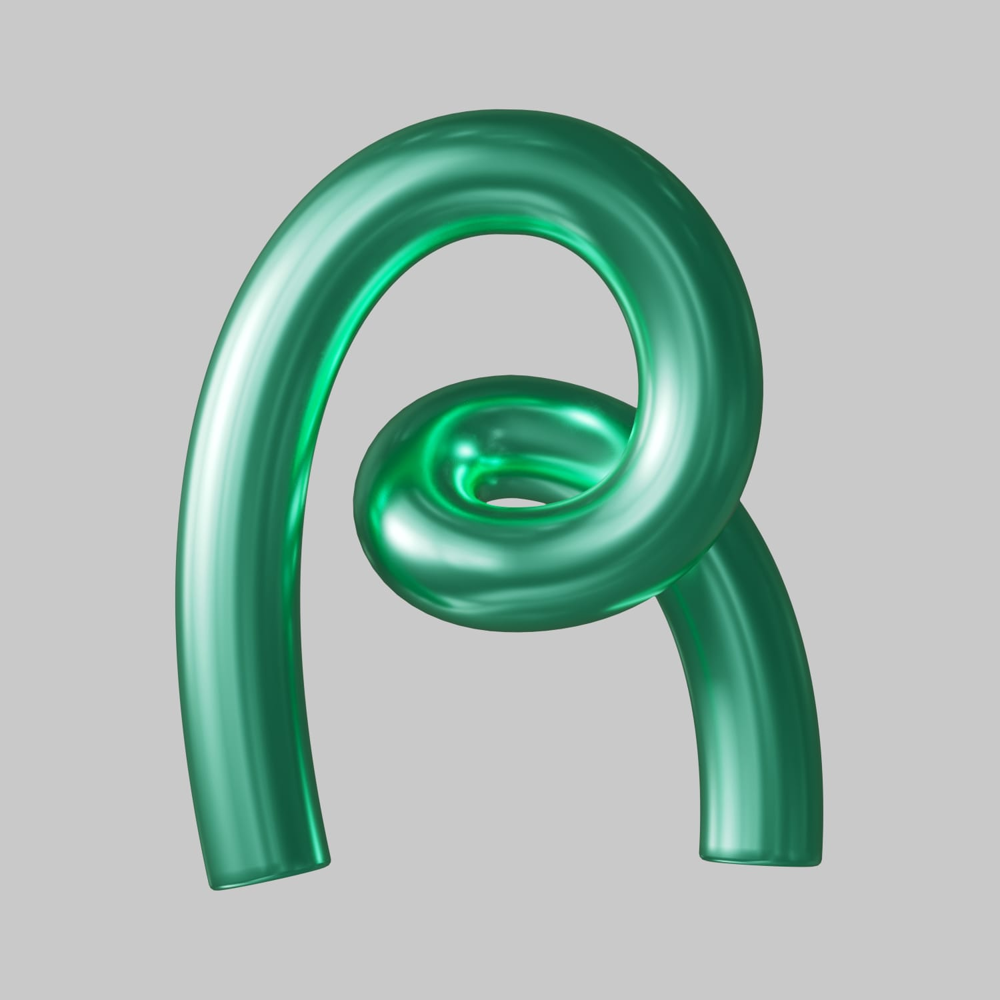
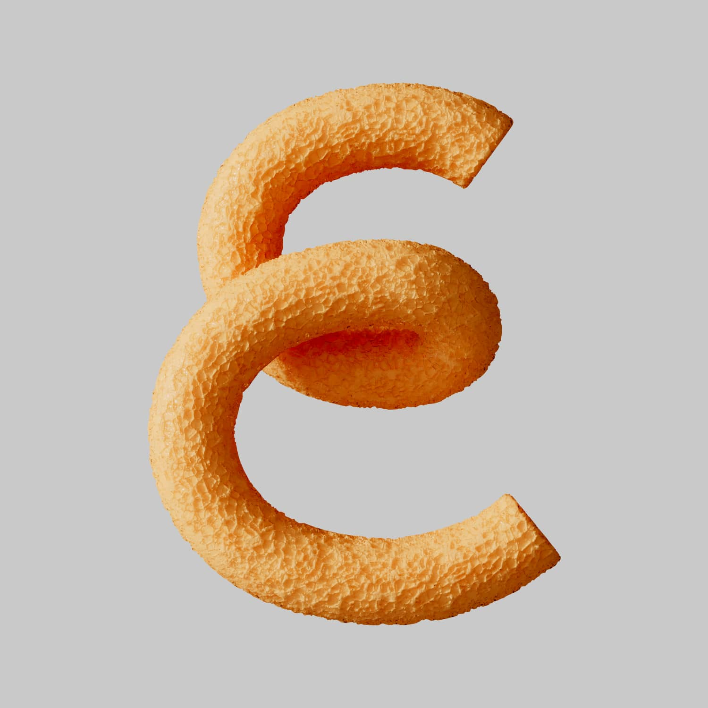

TIDAL "Cena Brasil"
Cena Brasil foi um projeto desenvolvido pela TIDAL Brasil que selecionou curadores de cada estado brasileiro para desenvolver as playlists Nova Cena Brasil, indicando as revelações de cada lugar e Essencial Cena Brasil, para os clássicos que todo mundo deveria conhecer.
Para os visuais das letras, os materiais mudaram de acordo com a playlist. Para a Essencial de cada estados, por contar com clássicos e artistas já consagrados, utilizamos materiais mais duros e fortes. No caso da Nova Cena, que trata de artistas novos e em ascensão, a escolha foi por materiais mais flexíveis e suaves.
Cliente: Tidal
Ano: 2020
Direção de Arte e Design Gráfico: Lívia Nishibe
3D: Bruno Faiotto & Leonardo Bortolussi
 


